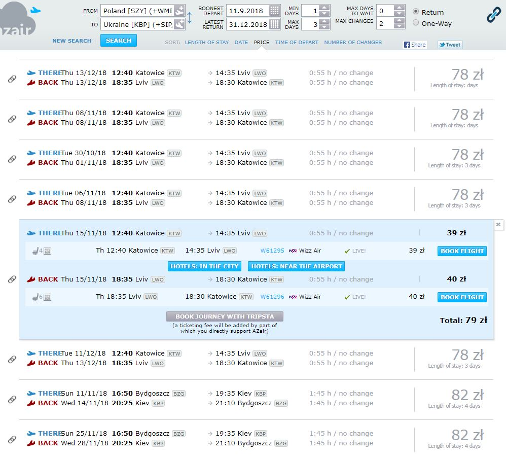
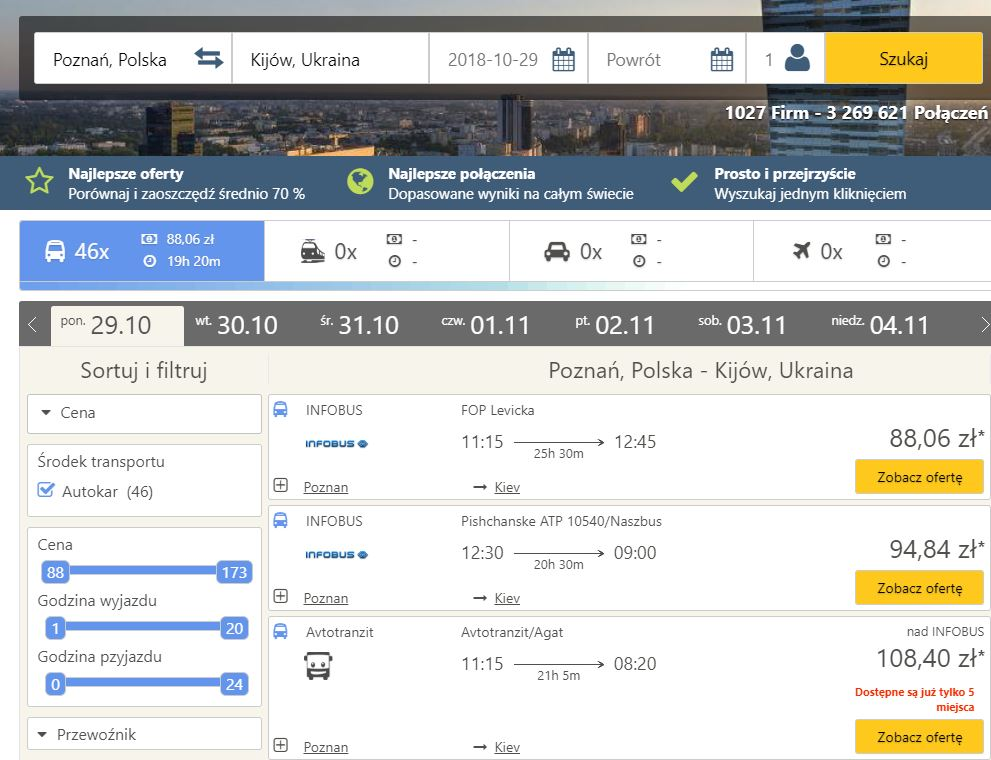

Tłumacz przysięgły języka ukraińskiego
Do wyboru mamy Wizzair, oraz Ryanair. Ceny? Bardzo proszę, jest naprawdę tanio, ceny zaczynają się od 70 zł i są to ceny regularne przy założeniu że za rezerwację wezniemy się trochę wcześniej niż kilka dni przed odlotem. Poniżej zamieszczamy ilustrację z przykładowymi cenami lotów na Ukrainę w drugiej połowie 2018 roku.
Do wyszukiwania lotów serdecznie polecamy jeden portal - Azair.eu . Jest to świetny portal, oferujący zaawansowane wyszukiwanie wszystkich największych przewoźników. Idealnie nadaje się na wyszukiwanie połączeń lotniczych na linii Polska - Ukraina. Możemy szukać w określonych datach, z określoną ilością przesiadek, wybierać czy chcemy nocować na lotnisku, lub też mieć dzień przerwy w innym mieście na przesiadce ( czy też nie). Co więcej wybieramy przedział ilości dni które mają nas dzielić pomiędzy przylotem a odlotem w przypadku lotów w obie strony, czy miksować wyszukiwanie i np. szukać tylko lotów z jednego miasta, np. Kijowa, do całej Polski i lecieć do miasta, które nam najbardziej odpowiada cenowo i lokalizacyjnie.
Podsumowując, na Ukrainę możemy lecieć z wielu polskich miast. Poczynając od Poznania, Bydgoszczy, Warszawy, na Gdańsku, Wrocławiu i Krakowie kończąc. Na Ukrainie bez problemu polecimy z takich miast jak Kijów, czy Lwów. Oferta jest atrakcyjna a siatka lotów gęsta. Portal Azair.eu bez problemu pomoże odnaleźć połączenie w interesujące dacie i cenie.
Jeżeli musicie w podróż wybrać się autobusem, ze względu na przewożony bagaż, czy inne względy z pomocą przychodzą dwa portale. https://www.checkmybus.pl/ i https://www.busradar.pl/ . Często dzięki tym portalom możemy dokonać rezerwacji, lub chociaż porównać oferty przewoźników by wybrać tą najtańszą. Podróż niestety trwa, przykładowo z Poznania do Kijowa to ok. 20 godzin podróży. Ceny na tej trasie oscylują wokół 100 zł za podróż w jedną stronę. Sprawdzonym przewoźnikiem jest flixbus, często też oferuje przewóz rowerów, co jest zdecydowaną nowością na polskim rynku transportu.
Połączenia kolejowe z Ukrainą są także dobrą alternatywą dla połączeń lotnicznych, kiedy blokują nas obostrzenia linii lotniczych, czy data podróży.
Ukraińskie koleje umieją coraz bardziej zaskakiwać oferowaną jakością. Co prawda wciąż zdarzają się im wpadki, lecz oferta z dnia na dzień staje się coraz bardziej przyjazna dla podróżnika, także tego międzynarodowego.
W 2018 roku możemy skorzystać z takich tras, jak:
Trasę z Przemyśla do Kijowa możemy pokonać już w nieco ponad 8 godzin. Ceny również nie są wygórowane. Przykładowo cała trasę Chełm - Kowel powinniśmy pokonać za ok. 6 euro.
Polska spółka intercity oferuje również połączenia z centrum Polski - m.in. z Warszawy, Lublina można dojechać bezpośrednim pociągiem do Kijowa. Podróż z Warszawy trwa około 17 godzin, ale nie wymaga przesiadek co jest dużym plusem. Oferta sygnowana jest nazwą Kiev Express.
Najbardziej wysuniętym na zachód miastem, do którego na jednym bilecie można dojechać do większego ukraińskiego miasta, jest Wrocław. Z Wrocławia z pomocą PKP dojedziemy do Lwowa. Podróż nie wymaga przesiadki, przez co mimo, że długa może być komfortowa. W Lwowie znajdziecie się po ponad 15-godzinnej podróży z stolicy dolnego śląska.
Natomiast konkretne informacje koleji ukraińskich znajdziecie tutaj: http://www.uz.gov.ua/en/
Przyczytaj więcej o języku ukraińskim i Ukrainie, klikając tutaj.